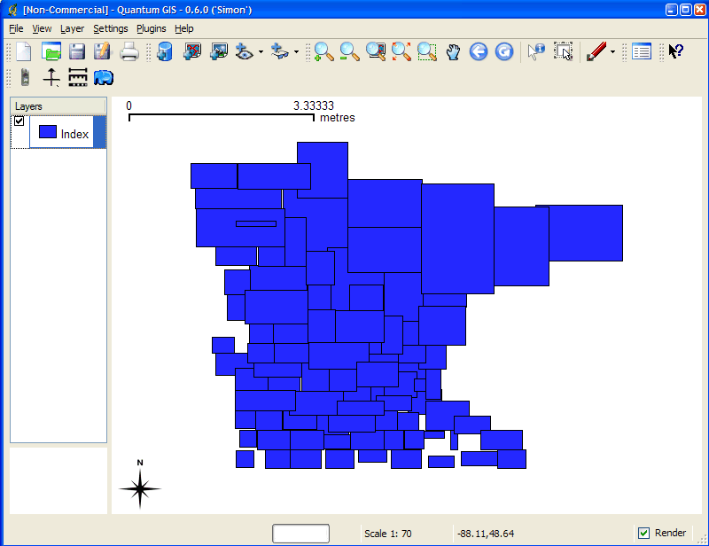
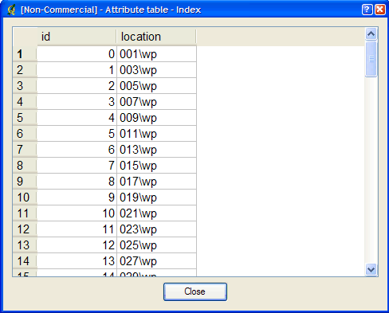

Creates a tile index shapefile for use with MapServer’s TILEINDEX feature. The program creates a shapefile of rectangles from extents of all the shapefiles listed in [metafile] (one shapefile name per line) and the associated DBF with the filename for each shape tile in a column called LOCATION as required by mapserv.
This utility creates a shapefile containing the MBR (minimum bounding rectangle) of all shapes in the files provided, which can then be used in the LAYER object’s TILEINDEX parameter of the mapfile. The new filed created with this command is used by MapServer to only load the files assocated with that extent (or tile).
tile4ms <meta-file> <tile-file> [-tile-path-only]
<meta-file> INPUT file containing list of shapefile names
(complete paths 255 chars max, no extension)
<tile-file> OUTPUT shape file of extent rectangles and names
of tiles in <tile-file>.dbf
-tile-path-only Optional flag. If specified then only the path to the
shape files will be stored in the LOCATION field
instead of storing the full filename.
create tileindex.shp for all tiles under the /path/to/data directory:
<on Unix>
cd /path/to/data
find . -name "/*.shp" -print > metafile.txt
tile4ms metafile.txt tileindex
<on Windows>
dir /b /s *.shp > metafile.txt
tile4ms metafile.txt tileindex
This example uses TIGER Census data, where the data contains files divided up by county (in fact there are over 3200 counties, a very large dataset indeed). In this example we will show how to display all lakes for the state of Minnesota. (note that here we have already converted the TIGER data into shapefile format, but you could keep the data in TIGER format and use the ogrtindex utility instead) The TIGER Census data for Minnesota is made up of 87 different counties, each containing its own lakes file (‘wp.shp’).
DOS: dir wp.shp /b /s > wp_list.txt (this includes full paths to the data, you might want to edit the txt file to remove the full path) UNIX: find -name *wp.shp -print > wp_list.txt
The newly created file might look like the following (after removing the full path):
001\wp.shp 003\wp.shp 005\wp.shp 007\wp.shp 009\wp.shp 011\wp.shp 013\wp.shp 015\wp.shp 017\wp.shp 019\wp.shp . . .
tile4ms wp_list.txt index Processed 87 of 87 files
Figure 1: Index file created by tile4ms utility
Figure 2: Attributes of index file created by tile4ms utility

For example:
LAYER NAME 'mn-lakes' STATUS ON TILEINDEX "index" TILEITEM "location" TYPE POLYGON CLASS NAME "mn-lakes" STYLE COLOR 0 0 255 END END ENDWhen you view the layer in a MapServer application, you will notice that when you are zoomed into a small area of the state only those lakes layers are loaded, which speeds up the application.